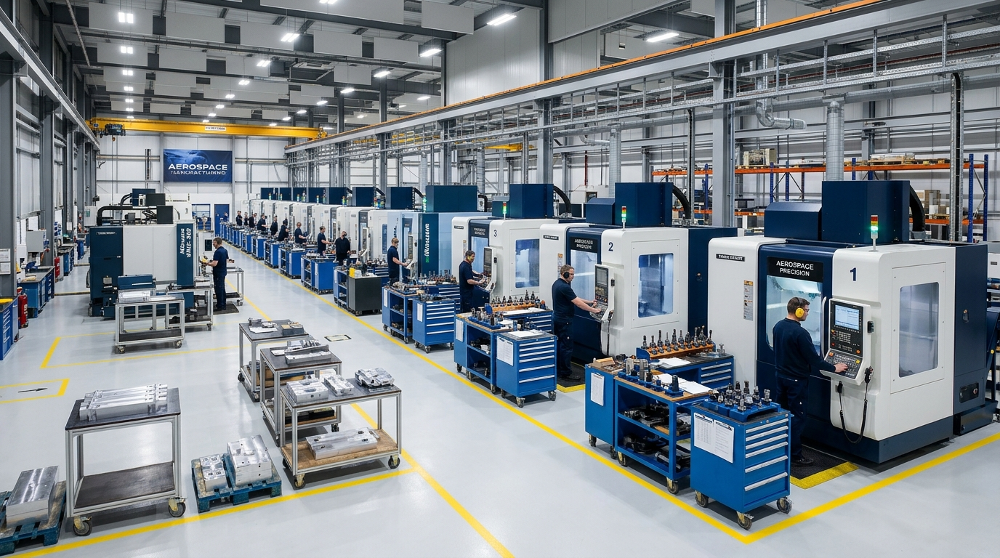
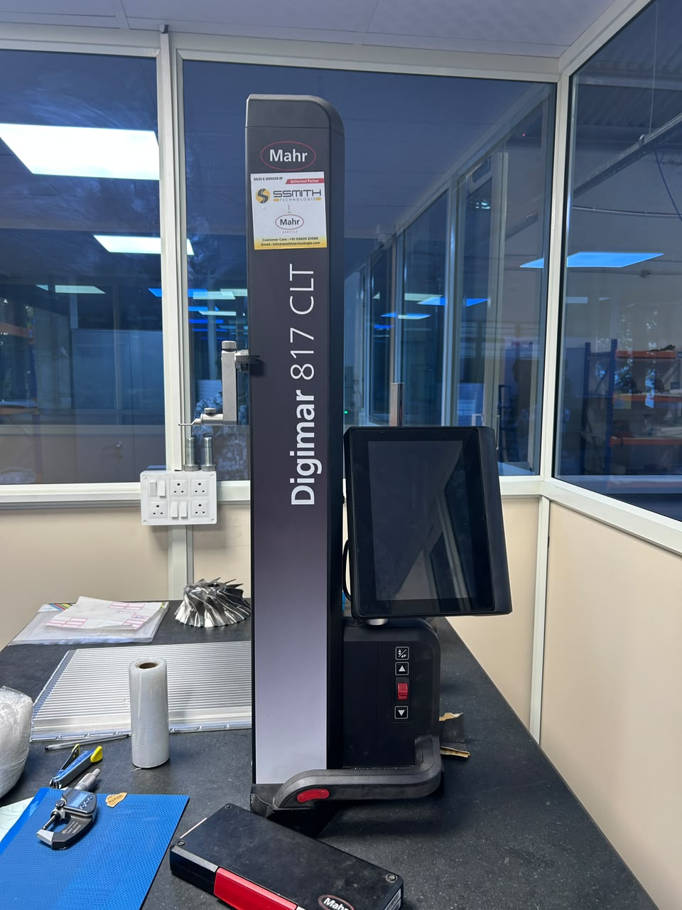
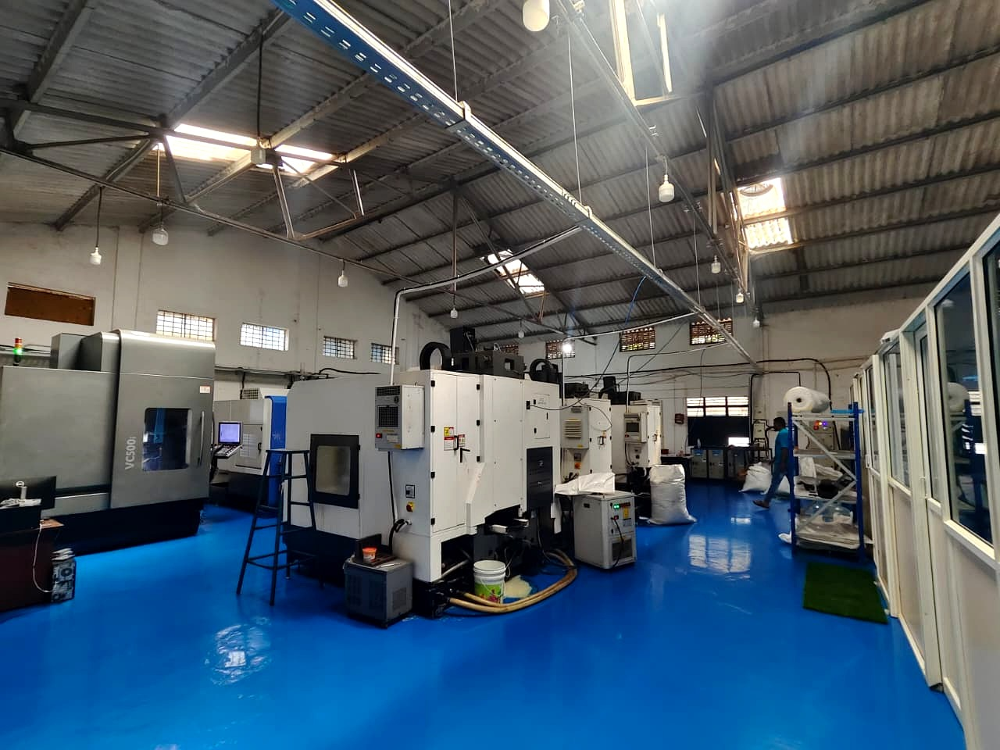

Precision Machining.
Engineered for Performance.
Ascent Engineering delivers precision CNC machining solutions through advanced multi-axis manufacturing capabilities, disciplined production processes and a commitment to dimensional quality in Peenya, Bengaluru.
Manufacturing Precision Through Advanced Technology
Ascent Engineering specializes in precision CNC machining and engineered component manufacturing. Our dedicated manufacturing facility in Peenya 3rd Stage, Bengaluru is equipped with simultaneous 5-axis and production 3-axis vertical machining centers, delivering tight geometric tolerances, complex contoured surfaces, and high-repeatability batch production.
Serving critical sectors including aerospace, defense, and precision industrial engineering, we approach manufacturing with rigorous engineering discipline. From 3D CAD/CAM model reviews and toolpath optimization to rigid fixturing and in-process metrology, our team ensures every metallic component meets exacting drawing specifications.
Multi-Axis Execution
Simultaneous 5-axis Hurco VC 500i machining for complex aerodynamic contours and compound angles.
Production Agility
Six 3-axis VMC production lines (Cosmos & Yantrang) configured for parallel batch milling.
Dimensional Discipline
Granite table metrology with calibrated Mahr Digimar 817 CLT 2D linear height measurement.
Synchronized Tapping
Rigid CNC tapping cycles ensuring consistent thread pitch, depth accuracy, and zero cross-threading.

Ground Floor, B 40, 1st Main Road. Precision CNC machining, 5-axis & 3-axis VMC facility.
Manufacturing Capabilities
Engineered machining solutions supporting complex multi-axis geometries, high-precision milling, and rigid threading operations.
 Advanced Multiaxis
Advanced Multiaxis
5-Axis CNC Machining
Complex component machining with simultaneous multi-axis capability on our Hurco VC 500i. Enables continuous milling of sculpted aerodynamic surfaces, impellers, and contoured metallic geometry in single or minimal clamping setups.
 Production Fleet
Production Fleet
3-Axis VMC Machining
Precision milling operations for engineered components across our six VMC lines. High-rigidity cast spindles, stable clamping beds, and automated tool changers handle batch production with dependable repeatability.
 Threading & Tapping
Threading & Tapping
CNC Tapping Operations
Accurate thread machining and tapping operations. Rigid synchronized tapping cycles ensure uniform thread pitch, clean root clearance, and zero cross-threading across deep-hole and blind-hole configurations.
Industries We Serve
Delivering high-reliability precision machining and engineered metallic components for high-consequence industries where performance is critical.
 Aerospace
Aerospace
Aerospace
Machining of lightweight avionics structural frames, sensor housings, aerodynamic brackets, and thin-wall enclosures manufactured to exacting geometric tolerances.
Aluminium 6061-T6, 7075-T651, Stainless Steel 316, Aircraft Titanium alloys.
 Defense
Defense
Defense
Tactical hardware, ruggedized electronic housings, guidance chassis, and high-strength mechanical assemblies engineered for demanding operational environments under strict confidentiality.
High-strength alloy steels, precipitation-hardened stainless, engineered armor aluminium.
 Industrial Engineering
Industrial Engineering
Industrial Engineering
Heavy-duty machinery parts, custom automated tooling plates, bearing mounts, and high-load mechanical interfaces designed for reliable, continuous industrial service.
Carbon steels (EN8/EN19/EN24), tool steels, bronze alloys, engineering structural metals.
 Precision Manufacturing
Precision Manufacturing
Precision Manufacturing
High-accuracy prismatic components, precision indexing blocks, reference fixturing, and multi-axis assemblies requiring micron-level repeatability and clean surface textures.
Die steels, hardened tool steels, precision aluminium plate, high-nickel stainless steels.
 Advanced Mechanical
Advanced Mechanical
Advanced Mechanical Components
Fluid power manifolds, precision hydraulic valve blocks, thermal cold plates, and multi-port fluid distribution assemblies featuring intricate internal flow passages and vacuum-tight sealing surfaces.
Billet aluminium 6082/7075, stainless 304L/316L, ductile iron, custom brass hydraulic fittings.
Our Manufacturing Process
A structured, step-by-step methodology ensuring complete drawing compliance, repeatable tolerances, and reliable batch execution from receipt to delivery.
Technical Drawing Review
Engineering review of 2D manufacturing drawings and 3D CAD/CAM models. Analyzing GD&T datums, critical bore tolerances, thread specifications, and material suitability.
- 2D/3D CAD geometry verification
- GD&T & tolerance stack analysis
- DFM optimization recommendations
Manufacturing Planning
Toolpath generation, cutting tool selection, custom fixturing setup, and material allocation to guarantee minimal setup vibration and maximum positional repeatability.
- Multi-axis CNC CAM simulation
- Standardized fixture & vise staging
- Verified alloy raw material staging
CNC Machining
Execution on our 5-axis Hurco and 3-axis VMC fleet. High-rigidity milling, pocketing, boring, and synchronized rigid tapping with controlled flood coolant stabilization.
- 5-Axis & 3-Axis multi-station cutting
- Thermal coolant stabilization
- Continuous tool wear compensation
Component Inspection
Rigorous in-process dimensional inspection. First-piece verification (FAI), intermediate batch sampling, and thread testing with calibrated plug gauges and bore micrometers.
- First Article Inspection (FAI)
- Bore & step height verification
- Thread go/no-go quality check
Quality Verification
Metrological validation on granite surface plates using our calibrated Mahr Digimar 817 CLT 2D linear height gauge and surface parameter standards.
- Mahr 2D height gauge metrology
- Surface roughness (Ra) compliance
- Comprehensive inspection reports
Final Delivery
Precision deburring, ultrasonic solvent degreasing, individual protective cushioning wrap, lot labeling, and prompt dispatch to client assembly lines.
- Ultrasonic cleaning & deburring
- Protective surface wrap packaging
- Batch traceability & fast dispatch
Verified Infrastructure Highlights
Our available machine capacity configured for precision aerospace, automotive, defense, and custom engineering components.
5-Axis VMC
Hurco VC 500i multi-axis vertical machining center engineered for simultaneous complex profiling and contoured geometries.
3-Axis VMC Fleet
Six vertical machining centers (Cosmos & Yantrang platforms) installed in line to accommodate parallel batch milling and rapid turnaround jobs.
CNC Tapping Operations
Synchronized rigid thread tapping ensuring accurate pitch control and consistent internal threads across all batches.
Precision Metrology
Mahr Digimar 817 CLT 2D linear height gauge and surface parameter standards supporting verified inspection on granite benches.
Precision Component Manufacturing
Machining of custom components based on engineering drawings across aerospace, defense, and precision mechanical applications.

Precision Cylindrical Avionics & Sensor Housings
Multi-axis turned and milled aerospace enclosure featuring precision side pocket bays, mounting flanges, and fine-pitch tapped hole matrices. Machined from solid aerospace-grade alloy with strict datum concentricity.

Multi-Bay Electronic Chassis Plates
Elongated thin-wall structural plates with deep pocket milling, isolation rib dividers, and high-density fastener patterns.

Precision Thermal Cold Plates
High-density micro-channel cooling plates with parallel channels and perimeter vacuum sealing lands.

Thin-Wall Lattice Baffle Structures
Intricate cellular cutouts and perforated metal shields engineered for lightweight structural rigidity.
Quality Begins with Measurement.
At Ascent Engineering, precision is governed by strict measurement protocols. Our quality inspection process emphasizes dimensional verification, surface roughness discipline, and repeatable accuracy from first article to final batch dispatch.


Disciplined Manufacturing Infrastructure
A clean, organized production floor located in Peenya 3rd Stage, Bengaluru, built to support high-precision CNC milling and disciplined component production.
Stable Power Distribution
Dedicated industrial power infrastructure ensuring uninterrupted machine cycles and thermal stability.
Coolant & Thermal Control
High-flow filtration systems maintaining cutting temperature, tool longevity, and surface integrity.
Disciplined Chip Evacuation
Continuous swarf extraction preventing chip recutting and protecting critical finished faces.
Staging & Traceability
Organized batch staging, protective component sleeves, and batch traceability protocols.
Why Ascent Engineering
We combine robust machine capacity, manufacturing discipline, and dependable customer collaboration to give engineering teams complete confidence in their precision components.
Advanced CNC Infrastructure
Equipped with vertical machining centers featuring modern CNC controllers and high-rigidity structures for dependable repeatable performance.
Multi-Axis Machining Capability
Dedicated 5-axis Hurco VC 500i capability and multi-axis rotary setups to manufacture intricate geometry, aerofoils, and compound angles with minimal setups.
Precision Component Manufacturing
From engineering drawings to finished metallic parts, supporting aerospace, defense, automotive, and automation applications.
Quality-Focused Operations
Structured dimensional inspection utilizing Mahr 2D linear height measurement and calibrated tools on granite reference benches.
Custom Machining Requirements
Flexible production agility supporting quick-turn prototypes, pre-production trial lots, and continuous batch manufacturing.
Dedicated Manufacturing Facility
Conveniently situated in Peenya 3rd Stage, Bengaluru's premier industrial corridor, providing direct engineering accessibility.